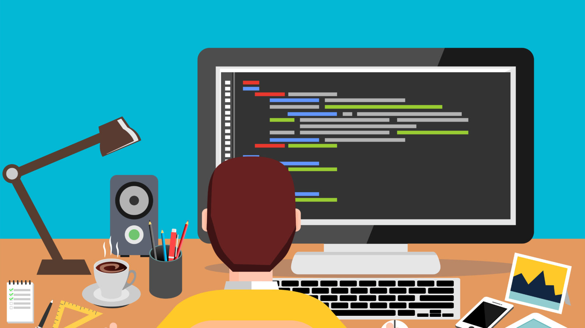

Le développeur web mobile est le chef d'orchestre des applications mobiles. Il conçoit des programmes informatiques, tel un développeur web, à la différence qu'il se spécialise dans le domaine mobile et nomade (mobile, smartphone, tablettes). Découvrez le salaire junior moyen d'un développer web mobile, les compétences requises, des exemples de formations...
Le développeur web mobile est un expert du monde mobile. Sa mission : analyser les besoins de ses clients, concevoir des applications mobiles, sites internet, services en ligne, jeux vidéo pour des supports mobiles (smartphones, tablettes), veiller à leur bon fonctionnement et agir en qualité de support technique en cas de difficulté. Il est à la fois créateur, technicien, artiste, décisionnaire, analyste, mais avant tout un expert du monde du web mobile. Il travaille en étroite collaboration avec des designers, des chefs de projet, des graphistes, et se doit de faire preuve d'esprit d'équipe pour mener à bien ses projets. Au-delà de ces missions, il peut être amené à former ses clients sur ses réalisations. Il agit donc comme un conseiller et service après-vente.

Lorsque l’on parle de «Front-End», il s’agit finalement des éléments du site que l’on voit à l’écran et avec lesquels on peut interagir. Ces éléments sont composés de HTML, CSS et de Javascript, contrôlés par le navigateur web de l’utilisateur.
Le Back-End, c’est un peu comme la partie immergée de l’iceberg. Elle est invisible pour les visiteurs mais représente une grande partie du développement d’un projet web. Sans elle, le site web reste une coquille vide.
Un développeur full stack, appelé aussi développeur généraliste, développeur polyvalent ou plus familièrement « développeur à tout faire », est un codeur capable de réaliser la programmation d’un site ou d'une application web à la fois en front-end et back-end.